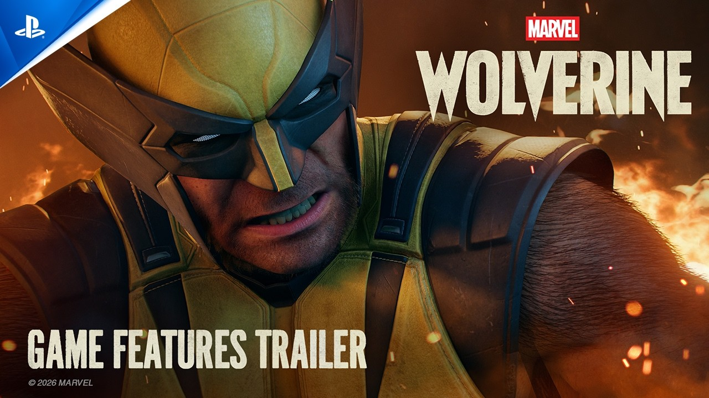
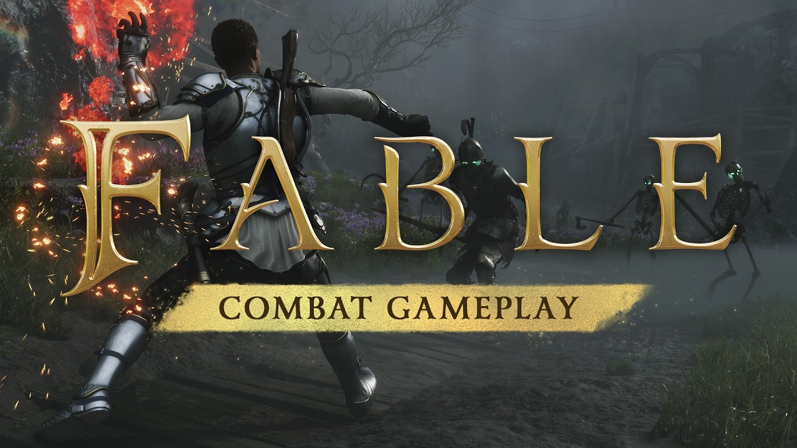

🔥🔥
索尼音乐日本入股 GungHo 23.29%
约 286 亿日元；交割计划 12/30；SME 成第一大股东，维持经营独立。
- 日期
- 2026-08-28
- 库
- 游戏行业观察
- 状态
- GungHo IR + Gematsu
今日无新旗舰。今日无新 MCP/Skill 推荐。主线：索尼音乐日本入股 GungHo；绝区零 3.2 前瞻；gamescom 颁奖；金刚狼功能片。AI 编程轴有 Claude Code 2.1.251（非推荐）。
游戏开发观察空库未出 Tab。不复述已报的 GTA6 Extended Look / Xbox Day1–2 长名单 / 褪色者版发售。
跨库最高 Attention 落在 SME×GungHo 入股、绝区零 3.2 前瞻、gamescom 颁奖与金刚狼功能片。
观察清单：高雄相伴今日进行中；Awesome Indies 片单；TGS 9/16。
约 286 亿日元；交割计划 12/30；SME 成第一大股东，维持经营独立。
9/9 上线；新专精锋御；S 级克拉蕾（电·锋御）上半、洛克茜（风·击破）下半。
CDPR 与 SEGA 各三奖；鬼武者双料；燕云十六声最佳移动；终末地获观众最佳展台。
战斗 / Rage / 适配 / 无障碍与暴力开关；9/15 PS5 发售前功能切片。
| 观察库 | 独立 Signal | 密度 | 备注 |
|---|---|---|---|
| AI 观察 | 1 | 中 | 无新旗舰；无新 MCP/Skill 推荐；Claude Code 2.1.251 编程轴 |
| 二次元游戏观察 | 2 | 高 | 3.2 前瞻 + 原神限时活动 |
| 游戏开发观察 | 0 | 空 | 空库未出 Tab |
| 游戏行业观察 | 11 | 高 | 资本 + 颁奖 + 深潜 + 独立 + 新锁 + 公测 |
今日无新旗舰。今日无新 MCP/Skill 推荐。窗内仅编程列车：Claude Code 2.1.251（产品 changelog，不当推荐条）。
ZCode 客户端小版本含 Skills/MCP 入口改动，记产品列车，不冒充推荐。
Anthropic 于 8/28（UTC）发布功能与安全双线版本：模型切换钩子、前台子代理 Remote Control 实况、花费/缓存可观测，并修多条沙箱与路径穿越类问题。
PreModelSwitch / PostModelSwitch（可 block / confirm / annotate）。/usage Spend limit；/cost 增加 prompt-cache 命中率等字段。/effort 按模型分别记忆。编程轴，不冒充 MCP/Skill 推荐。关注度 · 🔥。
绝区零 3.2 前瞻特别节目落地，版本锁 9/9。今日有版本级新角色与新专精落款。
不复述星铁 4.5 / 终末地×优衣库已报条。高雄相伴今日开场，实况待核。
《绝区零》3.2 版本前瞻特别节目于 8/28 19:30（UTC+8）播出，版本定档 9/9，并公布新专精与两名 S 级代理人。
claret0909；国际服 flintworks。落款：Gematsu 转官方综述 + 米游社代理人档案。兑换码经社区一线整理交叉，仍建议进游戏核对。关注度 · 🔥🔥。
7.0 窗内大型限时活动于 8/28 11:00（UTC+8）开赛，至 9/14；排名达标可邀请四星「猫尾特调·迪奥娜」。
关注度 · 🔥。下半祈愿开启 9/1，进观察清单不复述。
资本与展会收尾并行：SME 入股 GungHo；颁奖与金刚狼深潜。独立有《魔女庭院》1.0。今日无新展会世界首发。
不复述 Xbox Day1/2 长名单与 GTA6 Extended Look。Awesome Indies 片单仍待核。
GungHo IR：SME 经场外双边交易取得约 23.29% 表决权，总价约 286.4 亿日元；计划 2026-12-30 交割，SME 成第一大股东，GungHo 维持东证 Prime 上市与经营独立。
一线：GungHo IR PDF + Gematsu。关注度 · 🔥🔥。
Team Tapas 韩独立动作 roguelike 于 8/28 结束抢先体验并出 1.0：战斗大改、结局补完、键鼠与日语配音等。
达独立门槛（正式版 + 口碑积累）。关注度 · 🔥。
Finji 第三人称动作新作锁 10/28；MonsterVine 交叉称 Awesome Indies 播出新预告且已有 Demo——为该秀目前首条一线可核日期。
5.18 查完无官方简中，留英文。关注度 · 🔥。
8/28 于 gamescom studio（IGN）公布 19 个类别获奖结果；CD PROJEKT RED 与 SEGA 各获三奖。
| 类别 | 作品 | 厂商 |
|---|---|---|
| Best Xbox | 极限竞速：地平线6（Forza Horizon 6） | Playground / Xbox |
| Best PC | Total War: WARHAMMER 40,000 | CA / SEGA |
| Best PlayStation | 鬼武者 Way of the Sword | Capcom |
| Best Switch 2 | Rayman Legends Retold | Ubisoft |
| Best Mobile | 燕云十六声（Where Winds Meet） | Everstone / 网易 |
信源：Games Press 官方稿。关注度 · 🔥🔥。
Insomniac / PlayStation Blog 发布功能预告，拆战斗动量、Rage、适配、套装爪刃与无障碍选项；9/15 PS5 发售。

一线：PlayStation Blog。关注度 · 🔥🔥。
Playground / Xbox 放出约 16 分钟战斗实机：近战、远程与魔法无缝切换，定档 2027-02-23 并进 Game Pass。

Steam 简中店名「神鬼寓言」。关注度克制 · 🔥。
Xbox Wire 于 Gamescom 观摩 Invoke Studios 作品：开放法术组合与无路点谜题探索；2027 登 Xbox。
店名/官译未核简中店页，标题暂留英文副标题。关注度 · 🔥。
全平台 Open Beta（Weekend Two）自 8/28 10:00 PT 起对所有玩家开放，至 9/1 10:00 PT；无需预购。
官方名 Modern Warfare 4；中文沿用系列「现代战争」。关注度 · 🔥。
集英社游戏 × MicroSimulation 宣布殖民地模拟 × 4X；Steam 简中店名「征服纪：臣民之心」，计划 2027 夏发售。
店名按 Steam 简中名称。关注度 · 🔥。
已在 PC 发售的探索解谜作锁 PS5 / Xbox / Switch；同日上线 DLC「永泉传说 —— 破碎之形」。
关注度 · 🔥。
本窗无新世界首发。Awesome Indies 首条可核新锁：Usual June（10/28）；完整一线名单仍待核。
| 类型 | 作品 | 说明 |
|---|---|---|
| 新锁 | Usual June | 2026-10-28；Awesome Indies 交叉 |
| 深潜 | 神鬼寓言 | 16 分钟战斗；档期仍 2027-02-23 |
| 深潜 | 漫威金刚狼 | 功能预告；档期仍 2026-09-15 |
规范 5.17。独立：魔女庭院 1.0 + Usual June 已单开。
窗口（2026-08-28，2026-08-29] Asia/Shanghai，含昨 9:30 后补入核。空库：游戏开发观察未出 Tab。今日无新旗舰；今日无新 MCP/Skill 推荐。生成于 2026-08-29 09:30 档日常规整理。